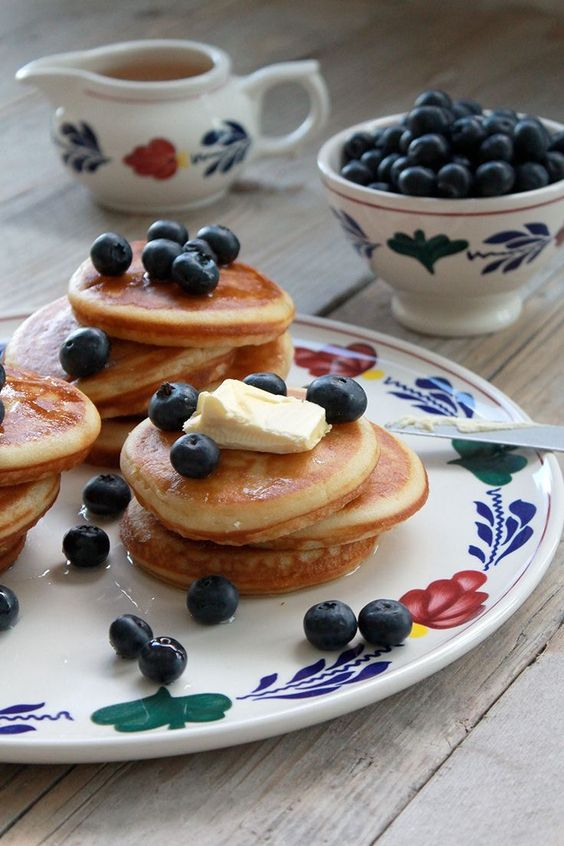
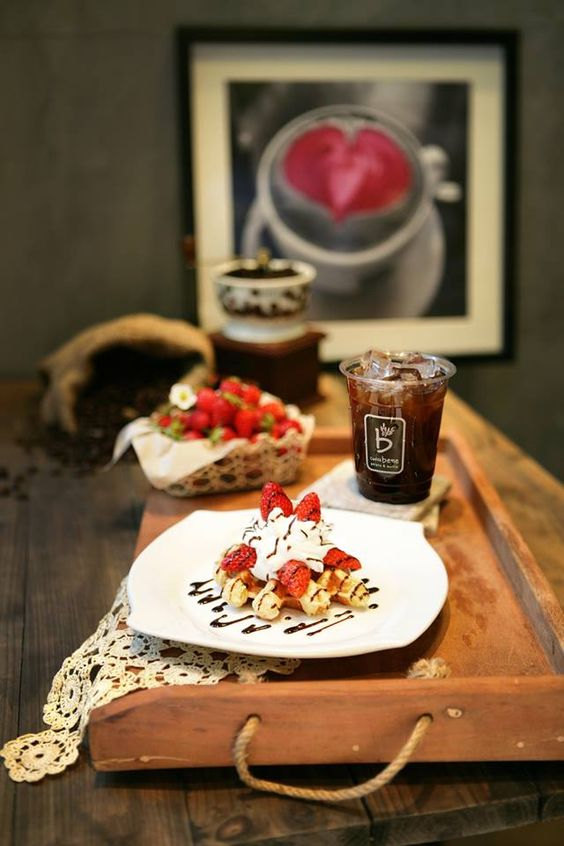

DOLCE O SALATA?
Dolce o salata non importa, la colazione è il vero biglietto da visita di una nazione e della sua cultura.

OLANDA
Serviti solitamente con uno sciroppo scuro di nome stroop, i pancakes alla mela della colazione olandese sono una perfetta combinazione di dolce, aspro e salato.

COREA
In Corea la colazione è simile al pranzo ed alla cena. Consiste in un piatto di kimchi (verdure fermentate condite con spezie) una ciotola di riso ed una di zuppa di verdure.